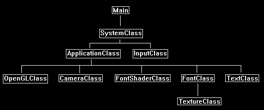

Writing text onto the screen is a pretty important function of any application.
Rendering text in OpenGL 4.0 requires that you first know how to render 2D images.
As we covered that topic in the previous tutorial we will now build on that knowledge.
The first thing you are going to need is your own font image.
I built a really simple one with the characters I wanted and put it on a 1024x32 tga texture:

As you can see it has all the basic characters we need and they are all on a single texture file.
We can now build a simple font engine which uses an index into that texture to draw individual characters to the screen as needed.
How we do that in OpenGL 4.0 is we build a square out of two triangles and then render the single character from the texture onto that square.
So, if we have a sentence, we figure out the characters we need, create a square for each one of them, and then render the characters to those squares.
After doing that we render all the squares onto the screen to the location that forms the sentence.
This is the same method we used in the previous tutorial to render a 2D image to the screen.
Now to index the texture we will need a text file that gives the location and size of each character in the texture.
This text file will allow the font engine to quickly grab the pixels it needs out of the texture to form a character that it can render.
Below is the index file for this font texture.
This format of the file is: [Ascii value of character] [The character] [Left Texture U coordinate] [Right Texture U Coordinate] [Pixel Width of Character]
32 0.0 0.0 0
33 ! 0.0 0.00390625 4
34 " 0.0048828125 0.0107421875 6
35 # 0.01171875 0.025390625 14
36 $ 0.0263671875 0.0390625 13
37 % 0.0400390625 0.0546875 15
38 & 0.0556640625 0.0693359375 14
39 ' 0.0703125 0.0732421875 3
40 ( 0.07421875 0.0791015625 5
41 ) 0.080078125 0.0849609375 5
42 * 0.0859375 0.091796875 6
43 + 0.0927734375 0.103515625 11
44 , 0.1044921875 0.107421875 3
45 - 0.1083984375 0.1142578125 6
46 . 0.115234375 0.1181640625 3
47 / 0.119140625 0.126953125 8
48 0 0.1279296875 0.1416015625 14
49 1 0.142578125 0.146484375 4
50 2 0.1474609375 0.1591796875 12
51 3 0.16015625 0.1708984375 11
52 4 0.171875 0.1845703125 13
53 5 0.185546875 0.1962890625 11
54 6 0.197265625 0.2099609375 13
55 7 0.2109375 0.22265625 12
56 8 0.2236328125 0.236328125 13
57 9 0.2373046875 0.2490234375 12
58 : 0.25 0.2529296875 3
59 ; 0.25390625 0.2568359375 3
60 < 0.2578125 0.267578125 10
61 = 0.2685546875 0.279296875 11
62 > 0.2802734375 0.2900390625 10
63 ? 0.291015625 0.302734375 12
64 @ 0.3037109375 0.3173828125 14
65 A 0.318359375 0.33203125 14
66 B 0.3330078125 0.3447265625 12
67 C 0.345703125 0.3564453125 11
68 D 0.357421875 0.3701171875 13
69 E 0.37109375 0.3818359375 11
70 F 0.3828125 0.3935546875 11
71 G 0.39453125 0.40625 12
72 H 0.4072265625 0.41796875 11
73 I 0.4189453125 0.421875 3
74 J 0.4228515625 0.4326171875 10
75 K 0.43359375 0.4443359375 11
76 L 0.4453125 0.4541015625 9
77 M 0.455078125 0.4697265625 15
78 N 0.470703125 0.482421875 12
79 O 0.4833984375 0.49609375 13
80 P 0.4970703125 0.5078125 12
81 Q 0.509765625 0.5224609375 13
82 R 0.5234375 0.53515625 12
83 S 0.5361328125 0.548828125 13
84 T 0.5498046875 0.5615234375 12
85 U 0.5625 0.57421875 12
86 V 0.5751953125 0.5888671875 14
87 W 0.58984375 0.609375 20
88 X 0.6103515625 0.6220703125 12
89 Y 0.623046875 0.6357421875 13
90 Z 0.63671875 0.6474609375 11
91 [ 0.6484375 0.654296875 6
92 \ 0.6552734375 0.6630859375 8
93 ] 0.6640625 0.6689453125 5
94 ^ 0.669921875 0.6806640625 11
95 _ 0.681640625 0.6904296875 9
96 ` 0.69140625 0.6962890625 5
97 a 0.697265625 0.70703125 10
98 b 0.7080078125 0.7177734375 10
99 c 0.71875 0.7275390625 9
100 d 0.728515625 0.73828125 10
101 e 0.7392578125 0.748046875 9
102 f 0.7490234375 0.755859375 7
103 g 0.7568359375 0.7666015625 10
104 h 0.767578125 0.7763671875 9
105 i 0.77734375 0.7802734375 3
106 j 0.78125 0.7861328125 5
107 k 0.787109375 0.796875 10
108 l 0.7978515625 0.80078125 3
109 m 0.8017578125 0.8154296875 14
110 n 0.81640625 0.826171875 10
111 o 0.8271484375 0.8369140625 10
112 p 0.837890625 0.84765625 10
113 q 0.8486328125 0.8583984375 10
114 r 0.859375 0.8671875 8
115 s 0.8681640625 0.8779296875 10
116 t 0.87890625 0.8857421875 7
117 u 0.88671875 0.8955078125 9
118 v 0.896484375 0.908203125 12
119 w 0.9091796875 0.9248046875 16
120 x 0.92578125 0.935546875 10
121 y 0.9365234375 0.9453125 9
122 z 0.9462890625 0.9560546875 10
123 { 0.95703125 0.9638671875 7
124 | 0.96484375 0.966796875 2
125 } 0.9677734375 0.974609375 7
126 ~ 0.9755859375 0.986328125 11
With both the index file and texture file we have what we need to build the font engine.
If you need to build your own index file, just make sure that each character is only separated by spaces and you can write a bitmap parser yourself to create TU and TV coordinates based on where there are no blank spaces.
Remember that different users will run your application in different resolutions.
A single size font is not going to be clearly readable on all resolutions.
So, you may want to make 3-4 different font sizes and use certain ones for certain resolutions to fix this problem.
Framework
As we will want to encapsulate the font functionality in its own set of classes we will add some new classes to our frame work.
The updated frame work looks like the following:

In this tutorial we have three new classes called TextClass, FontClass, and FontShaderClass.
FontShaderClass is the shader for rendering fonts similar to how TextureShaderClass was used for rendering bitmap images in the previous tutorial.
FontClass holds the font data and constructs vertex buffers needed for rendering strings.
TextClass contains the vertex and index buffers for each set of text strings that need to be rendered to the screen, it uses FontClass to create the vertex buffer for the strings and then uses FontShaderClass to render those buffers.
Fontclass.h
We will look at the new FontClass first.
This class will handle the texture for the font, the font data from the text file, and the function used to build vertex buffers with the font data.
The vertex buffers that hold the font data for individual sentences will be in the TextClass and not inside this class.
So, this will just construct our sentences for us and give us access to the font texture when we are ready to render.
////////////////////////////////////////////////////////////////////////////////
// Filename: fontclass.h
////////////////////////////////////////////////////////////////////////////////
#ifndef _FONTCLASS_H_
#define _FONTCLASS_H_
//////////////
// INCLUDES //
//////////////
#include <fstream>
using namespace std;
///////////////////////
// MY CLASS INCLUDES //
///////////////////////
#include "textureclass.h"
////////////////////////////////////////////////////////////////////////////////
// Class name: FontClass
////////////////////////////////////////////////////////////////////////////////
class FontClass
{
private:
The FontType structure is used to hold the indexing data read in from the font index file.
The left and right are the TU texture coordinates.
The size is the width of the character in pixels.
struct FontType
{
float left, right;
int size;
};
The VertexType structure is for the actual vertex data used to build the square to render the text character on.
The individual character will require two triangles to make a square.
Those triangles will have position and texture data only.
struct VertexType
{
float x, y, z;
float tu, tv;
};
public:
FontClass();
FontClass(const FontClass&);
~FontClass();
bool Initialize(OpenGLClass*, int);
void Shutdown();
BuildVertexArray will handle building and returning a vertex array of triangles that will render the character sentence which was given as input to this function.
This function will be called by the new TextClass to build vertex arrays of all the sentences it needs to render.
So, we basically give it the sentence we want to render, and it sends us back the prebuilt vertex array for us to keep in the TextClass.
It is simply a builder type class.
void BuildVertexArray(void*, char*, float, float);
int GetSentencePixelLength(char*);
int GetFontHeight();
void SetTexture(unsigned int);
private:
bool LoadFontData(char*);
void ReleaseFontData();
bool LoadTexture(char*);
void ReleaseTexture();
private:
OpenGLClass* m_OpenGLPtr;
FontType* m_Font;
TextureClass* m_Texture;
float m_fontHeight;
int m_spaceSize;
};
#endif
Fontclass.cpp
///////////////////////////////////////////////////////////////////////////////
// Filename: fontclass.cpp
///////////////////////////////////////////////////////////////////////////////
#include "fontclass.h"
The class constructor initializes all the private member variables for the FontClass to null.
FontClass::FontClass()
{
m_OpenGLPtr = 0;
m_Font = 0;
m_Texture = 0;
}
FontClass::FontClass(const FontClass& other)
{
}
FontClass::~FontClass()
{
}
Initialize will load the font data and the font texture.
bool FontClass::Initialize(OpenGLClass* OpenGL, int fontChoice)
{
char fontFilename[128];
char fontTextureFilename[128];
bool result;
// Store a pointer to the OpenGL object.
m_OpenGLPtr = OpenGL;
We place a case statement here so we can expand this easily later on by adding additional fonts.
For now, the only option will be the first font we use in this tutorial.
If an incorrect fontChoice is sent as input then we default to the first font always.
// Choose one of the available fonts, and default to the first font otherwise.
switch(fontChoice)
{
case 0:
{
strcpy(fontFilename, "../Engine/data/font/font01.txt");
strcpy(fontTextureFilename, "../Engine/data/font/font01.tga");
m_fontHeight = 32.0f;
m_spaceSize = 3;
break;
}
default:
{
strcpy(fontFilename, "../Engine/data/font/font01.txt");
strcpy(fontTextureFilename, "../Engine/data/font/font01.tga");
m_fontHeight = 32.0f;
m_spaceSize = 3;
break;
}
}
// Load in the text file containing the font data.
result = LoadFontData(fontFilename);
if(!result)
{
return false;
}
// Load the texture that has the font characters on it.
result = LoadTexture(fontTextureFilename);
if(!result)
{
return false;
}
return true;
}
Shutdown will release the font data and the font texture.
void FontClass::Shutdown()
{
// Release the font texture.
ReleaseTexture();
// Release the font data.
ReleaseFontData();
// Release the pointer to the OpenGL object.
m_OpenGLPtr = 0;
return;
}
The LoadFontData function is where we load the font01.txt file which contains the indexing information for the texture.
bool FontClass::LoadFontData(char* filename)
{
ifstream fin;
int i;
char temp;
First, we create an array of the FontType structure.
The size of the array is set to 95 as that is the number of characters in the texture and hence the number of indexes in the font01.txt file.
// Create the font spacing buffer.
m_Font = new FontType[95];
Now we open the file and read each line into the array m_Font.
We only need to read in the texture TU left and right coordinates as well as the pixel size of the character.
// Read in the font size and spacing between chars.
fin.open(filename);
if(fin.fail())
{
return false;
}
// Read in the 95 used ascii characters for text.
for(i=0; i<95; i++)
{
fin.get(temp);
while(temp != ' ')
{
fin.get(temp);
}
fin.get(temp);
while(temp != ' ')
{
fin.get(temp);
}
fin >> m_Font[i].left;
fin >> m_Font[i].right;
fin >> m_Font[i].size;
}
// Close the file.
fin.close();
return true;
}
The ReleaseFontData function releases the array that holds the texture indexing data.
void FontClass::ReleaseFontData()
{
// Release the font data array.
if(m_Font)
{
delete [] m_Font;
m_Font = 0;
}
return;
}
The LoadTexture function reads in the font01.tga file into the texture shader resource.
This will be the texture we take the characters from and write them to their own square polygons for rendering.
bool FontClass::LoadTexture(char* textureFilename)
{
bool result;
// Create and initialize the font texture object.
m_Texture = new TextureClass;
result = m_Texture->Initialize(m_OpenGLPtr, textureFilename, false);
if(!result)
{
return false;
}
return true;
}
ReleaseTexture function releases the texture that was used for the font.
void FontClass::ReleaseTexture()
{
// Release the texture object.
if(m_Texture)
{
m_Texture->Shutdown();
delete m_Texture;
m_Texture = 0;
}
return;
}
SetTexture sets the font texture so the font graphics can be rendered.
void FontClass::SetTexture(unsigned int textureUnit)
{
// Set the texture for the font.
m_Texture->SetTexture(m_OpenGLPtr, textureUnit);
return;
}
BuildVertexArray will be called by the TextClass to build vertex buffers out of the text sentences it sends to this function as input.
This way the sentence in the TextClass that needs to be drawn has its own vertex buffer that can be rendered easily after being created.
The vertices input is the pointer to the vertex array that will be returned to the TextClass once it is built.
The sentence input is the text sentence that will be used to create the vertex array.
The drawX and drawY input variables are the screen coordinates of where to draw the sentence.
void FontClass::BuildVertexArray(void* vertices, char* sentence, float drawX, float drawY)
{
VertexType* vertexPtr;
int numLetters, index, i, letter;
// Coerce the input vertices into a VertexType structure.
vertexPtr = (VertexType*)vertices;
// Get the number of letters in the sentence.
numLetters = (int)strlen(sentence);
// Initialize the index to the vertex array.
index = 0;
The following loop will now build the vertex and index arrays.
It takes each character from the sentence and creates two triangles for it.
It then maps the character from the font texture onto those two triangles using the m_Font array which has the TU texture coordinates and pixel size.
Once the polygon for that character has been created it then updates the X coordinate on the screen of where to draw the next character.
// Draw each letter onto a quad.
for(i=0; i<numLetters; i++)
{
letter = ((int)sentence[i]) - 32;
// If the letter is a space then just move over three pixels.
if(letter == 0)
{
drawX = drawX + (float)m_spaceSize;
}
else
{
// First triangle in quad.
vertexPtr[index].x = drawX; // Top left.
vertexPtr[index].y = drawY;
vertexPtr[index].z = 0.0f;
vertexPtr[index].tu = m_Font[letter].left;
vertexPtr[index].tv = 1.0f;
index++;
vertexPtr[index].x = drawX + m_Font[letter].size; // Bottom right.
vertexPtr[index].y = drawY - m_fontHeight;
vertexPtr[index].z = 0.0f;
vertexPtr[index].tu = m_Font[letter].right;
vertexPtr[index].tv = 0.0f;
index++;
vertexPtr[index].x = drawX; // Bottom left.
vertexPtr[index].y = drawY - m_fontHeight;
vertexPtr[index].z = 0.0f;
vertexPtr[index].tu = m_Font[letter].left;
vertexPtr[index].tv = 0.0f;
index++;
// Second triangle in quad.
vertexPtr[index].x = drawX; // Top left.
vertexPtr[index].y = drawY;
vertexPtr[index].z = 0.0f;
vertexPtr[index].tu = m_Font[letter].left;
vertexPtr[index].tv = 1.0f;
index++;
vertexPtr[index].x = drawX + m_Font[letter].size; // Top right.
vertexPtr[index].y = drawY;
vertexPtr[index].z = 0.0f;
vertexPtr[index].tu = m_Font[letter].right;
vertexPtr[index].tv = 1.0f;
index++;
vertexPtr[index].x = drawX + m_Font[letter].size; // Bottom right.
vertexPtr[index].y = drawY - m_fontHeight;
vertexPtr[index].z = 0.0f;
vertexPtr[index].tu = m_Font[letter].right;
vertexPtr[index].tv = 0.0f;
index++;
// Update the x location for drawing by the size of the letter and one pixel.
drawX = drawX + m_Font[letter].size + 1.0f;
}
}
return;
}
The GetSentencePixelLength function returns how long the sentence is in terms of pixels.
You can use this for centering or otherwise positioning the text sentences on the screen.
int FontClass::GetSentencePixelLength(char* sentence)
{
int pixelLength, numLetters, i, letter;
pixelLength = 0;
numLetters = (int)strlen(sentence);
for(i=0; i<numLetters; i++)
{
letter = ((int)sentence[i]) - 32;
// If the letter is a space then count it as three pixels.
if(letter == 0)
{
pixelLength += m_spaceSize;
}
else
{
pixelLength += (m_Font[letter].size + 1);
}
}
return pixelLength;
}
The GetFontHeight function is the other function that helps position sentences on the screen.
With the width from GetSentencePixelLength and the height from this function, we have all the information we need to position sentences.
int FontClass::GetFontHeight()
{
return (int)m_fontHeight;
}
Font.vs
The font vertex shader is just a modified version of the texture vertex shader in the previous tutorial that was used to render 2D images.
The only change is the vertex shader name.
////////////////////////////////////////////////////////////////////////////////
// Filename: font.vs
////////////////////////////////////////////////////////////////////////////////
#version 400
/////////////////////
// INPUT VARIABLES //
/////////////////////
in vec3 inputPosition;
in vec2 inputTexCoord;
//////////////////////
// OUTPUT VARIABLES //
//////////////////////
out vec2 texCoord;
///////////////////////
// UNIFORM VARIABLES //
///////////////////////
uniform mat4 worldMatrix;
uniform mat4 viewMatrix;
uniform mat4 projectionMatrix;
////////////////////////////////////////////////////////////////////////////////
// Vertex Shader
////////////////////////////////////////////////////////////////////////////////
void main(void)
{
// Calculate the position of the vertex against the world, view, and projection matrices.
gl_Position = vec4(inputPosition, 1.0f) * worldMatrix;
gl_Position = gl_Position * viewMatrix;
gl_Position = gl_Position * projectionMatrix;
// Store the texture coordinates for the pixel shader.
texCoord = inputTexCoord;
}
Font.ps
////////////////////////////////////////////////////////////////////////////////
// Filename: font.ps
////////////////////////////////////////////////////////////////////////////////
#version 400
/////////////////////
// INPUT VARIABLES //
/////////////////////
in vec2 texCoord;
//////////////////////
// OUTPUT VARIABLES //
//////////////////////
out vec4 outputColor;
We have a new constant buffer that contains the pixelColor value.
We use this to control the color of the pixel that will be used to draw the font text.
///////////////////////
// UNIFORM VARIABLES //
///////////////////////
uniform sampler2D shaderTexture;
uniform vec4 pixelColor;
The FontPixelShader first samples the font texture to get the pixel.
If it samples a pixel that is black then it is just part of the background triangle and not a text pixel.
In this case we set the alpha of this pixel to zero so when the blending is calculated it will determine that this pixel should be see-through.
If the color of the input pixel is not black then it is a text pixel.
In this case we multiply it by the pixelColor to get the pixel colored the way we want and then draw that to the screen.
////////////////////////////////////////////////////////////////////////////////
// Pixel Shader
////////////////////////////////////////////////////////////////////////////////
void main(void)
{
vec4 color;
// Sample the pixel color from the texture using the sampler at this texture coordinate location.
color = texture(shaderTexture, texCoord);
// If the color is black on the texture then treat this pixel as transparent.
if(color.r == 0.0f)
{
color.a = 0.0f;
}
// If the color is other than black on the texture then this is a pixel in the font so draw it using the font pixel color.
else
{
color.a = 1.0f;
color = color * pixelColor;
}
outputColor = color;
}
Fontshaderclass.h
The FontShaderClass is just the TextureShaderClass from the previous tutorial renamed with a couple code changes for rendering fonts.
////////////////////////////////////////////////////////////////////////////////
// Filename: fontshaderclass.h
////////////////////////////////////////////////////////////////////////////////
#ifndef _FONTSHADERCLASS_H_
#define _FONTSHADERCLASS_H_
//////////////
// INCLUDES //
//////////////
#include <iostream>
using namespace std;
///////////////////////
// MY CLASS INCLUDES //
///////////////////////
#include "openglclass.h"
////////////////////////////////////////////////////////////////////////////////
// Class name: FontShaderClass
////////////////////////////////////////////////////////////////////////////////
class FontShaderClass
{
public:
FontShaderClass();
FontShaderClass(const FontShaderClass&);
~FontShaderClass();
bool Initialize(OpenGLClass*);
void Shutdown();
bool SetShaderParameters(float*, float*, float*, float*);
private:
bool InitializeShader(char*, char*);
void ShutdownShader();
char* LoadShaderSourceFile(char*);
void OutputShaderErrorMessage(unsigned int, char*);
void OutputLinkerErrorMessage(unsigned int);
private:
OpenGLClass* m_OpenGLPtr;
unsigned int m_vertexShader;
unsigned int m_fragmentShader;
unsigned int m_shaderProgram;
};
#endif
Fontshaderclass.cpp
////////////////////////////////////////////////////////////////////////////////
// Filename: fontshaderclass.cpp
////////////////////////////////////////////////////////////////////////////////
#include "fontshaderclass.h"
FontShaderClass::FontShaderClass()
{
m_OpenGLPtr = 0;
}
FontShaderClass::FontShaderClass(const FontShaderClass& other)
{
}
FontShaderClass::~FontShaderClass()
{
}
bool FontShaderClass::Initialize(OpenGLClass* OpenGL)
{
bool result;
// Store the pointer to the OpenGL object.
m_OpenGLPtr = OpenGL;
Initialize loads the new font vertex shader and pixel shader GLSL files.
// Set the location and names of the shader files.
char vsFilename[] = "../Engine/font.vs";
char psFilename[] = "../Engine/font.ps";
// Initialize the vertex and pixel shaders.
result = InitializeShader(vsFilename, psFilename);
if(!result)
{
return false;
}
return true;
}
void FontShaderClass::Shutdown()
{
// Shutdown the shader.
ShutdownShader();
// Release the pointer to the OpenGL object.
m_OpenGLPtr = 0;
return;
}
bool FontShaderClass::InitializeShader(char* vsFilename, char* fsFilename)
{
const char* vertexShaderBuffer;
const char* fragmentShaderBuffer;
int status;
// Load the vertex shader source file into a text buffer.
vertexShaderBuffer = LoadShaderSourceFile(vsFilename);
if(!vertexShaderBuffer)
{
return false;
}
// Load the fragment shader source file into a text buffer.
fragmentShaderBuffer = LoadShaderSourceFile(fsFilename);
if(!fragmentShaderBuffer)
{
return false;
}
// Create a vertex and fragment shader object.
m_vertexShader = m_OpenGLPtr->glCreateShader(GL_VERTEX_SHADER);
m_fragmentShader = m_OpenGLPtr->glCreateShader(GL_FRAGMENT_SHADER);
// Copy the shader source code strings into the vertex and fragment shader objects.
m_OpenGLPtr->glShaderSource(m_vertexShader, 1, &vertexShaderBuffer, NULL);
m_OpenGLPtr->glShaderSource(m_fragmentShader, 1, &fragmentShaderBuffer, NULL);
// Release the vertex and fragment shader buffers.
delete [] vertexShaderBuffer;
vertexShaderBuffer = 0;
delete [] fragmentShaderBuffer;
fragmentShaderBuffer = 0;
// Compile the shaders.
m_OpenGLPtr->glCompileShader(m_vertexShader);
m_OpenGLPtr->glCompileShader(m_fragmentShader);
// Check to see if the vertex shader compiled successfully.
m_OpenGLPtr->glGetShaderiv(m_vertexShader, GL_COMPILE_STATUS, &status);
if(status != 1)
{
// If it did not compile then write the syntax error message out to a text file for review.
OutputShaderErrorMessage(m_vertexShader, vsFilename);
return false;
}
// Check to see if the fragment shader compiled successfully.
m_OpenGLPtr->glGetShaderiv(m_fragmentShader, GL_COMPILE_STATUS, &status);
if(status != 1)
{
// If it did not compile then write the syntax error message out to a text file for review.
OutputShaderErrorMessage(m_fragmentShader, fsFilename);
return false;
}
// Create a shader program object.
m_shaderProgram = m_OpenGLPtr->glCreateProgram();
// Attach the vertex and fragment shader to the program object.
m_OpenGLPtr->glAttachShader(m_shaderProgram, m_vertexShader);
m_OpenGLPtr->glAttachShader(m_shaderProgram, m_fragmentShader);
// Bind the shader input variables.
m_OpenGLPtr->glBindAttribLocation(m_shaderProgram, 0, "inputPosition");
m_OpenGLPtr->glBindAttribLocation(m_shaderProgram, 1, "inputTexCoord");
// Link the shader program.
m_OpenGLPtr->glLinkProgram(m_shaderProgram);
// Check the status of the link.
m_OpenGLPtr->glGetProgramiv(m_shaderProgram, GL_LINK_STATUS, &status);
if(status != 1)
{
// If it did not link then write the syntax error message out to a text file for review.
OutputLinkerErrorMessage(m_shaderProgram);
return false;
}
return true;
}
void FontShaderClass::ShutdownShader()
{
// Detach the vertex and fragment shaders from the program.
m_OpenGLPtr->glDetachShader(m_shaderProgram, m_vertexShader);
m_OpenGLPtr->glDetachShader(m_shaderProgram, m_fragmentShader);
// Delete the vertex and fragment shaders.
m_OpenGLPtr->glDeleteShader(m_vertexShader);
m_OpenGLPtr->glDeleteShader(m_fragmentShader);
// Delete the shader program.
m_OpenGLPtr->glDeleteProgram(m_shaderProgram);
return;
}
char* FontShaderClass::LoadShaderSourceFile(char* filename)
{
FILE* filePtr;
char* buffer;
long fileSize, count;
int error;
// Open the shader file for reading in text modee.
filePtr = fopen(filename, "r");
if(filePtr == NULL)
{
return 0;
}
// Go to the end of the file and get the size of the file.
fseek(filePtr, 0, SEEK_END);
fileSize = ftell(filePtr);
// Initialize the buffer to read the shader source file into, adding 1 for an extra null terminator.
buffer = new char[fileSize + 1];
// Return the file pointer back to the beginning of the file.
fseek(filePtr, 0, SEEK_SET);
// Read the shader text file into the buffer.
count = fread(buffer, 1, fileSize, filePtr);
if(count != fileSize)
{
return 0;
}
// Close the file.
error = fclose(filePtr);
if(error != 0)
{
return 0;
}
// Null terminate the buffer.
buffer[fileSize] = '\0';
return buffer;
}
void FontShaderClass::OutputShaderErrorMessage(unsigned int shaderId, char* shaderFilename)
{
long count;
int logSize, error;
char* infoLog;
FILE* filePtr;
// Get the size of the string containing the information log for the failed shader compilation message.
m_OpenGLPtr->glGetShaderiv(shaderId, GL_INFO_LOG_LENGTH, &logSize);
// Increment the size by one to handle also the null terminator.
logSize++;
// Create a char buffer to hold the info log.
infoLog = new char[logSize];
// Now retrieve the info log.
m_OpenGLPtr->glGetShaderInfoLog(shaderId, logSize, NULL, infoLog);
// Open a text file to write the error message to.
filePtr = fopen("shader-error.txt", "w");
if(filePtr == NULL)
{
cout << "Error opening shader error message output file." << endl;
return;
}
// Write out the error message.
count = fwrite(infoLog, sizeof(char), logSize, filePtr);
if(count != logSize)
{
cout << "Error writing shader error message output file." << endl;
return;
}
// Close the file.
error = fclose(filePtr);
if(error != 0)
{
cout << "Error closing shader error message output file." << endl;
return;
}
// Notify the user to check the text file for compile errors.
cout << "Error compiling shader. Check shader-error.txt for error message. Shader filename: " << shaderFilename << endl;
return;
}
void FontShaderClass::OutputLinkerErrorMessage(unsigned int programId)
{
long count;
FILE* filePtr;
int logSize, error;
char* infoLog;
// Get the size of the string containing the information log for the failed shader compilation message.
m_OpenGLPtr->glGetProgramiv(programId, GL_INFO_LOG_LENGTH, &logSize);
// Increment the size by one to handle also the null terminator.
logSize++;
// Create a char buffer to hold the info log.
infoLog = new char[logSize];
// Now retrieve the info log.
m_OpenGLPtr->glGetProgramInfoLog(programId, logSize, NULL, infoLog);
// Open a file to write the error message to.
filePtr = fopen("linker-error.txt", "w");
if(filePtr == NULL)
{
cout << "Error opening linker error message output file." << endl;
return;
}
// Write out the error message.
count = fwrite(infoLog, sizeof(char), logSize, filePtr);
if(count != logSize)
{
cout << "Error writing linker error message output file." << endl;
return;
}
// Close the file.
error = fclose(filePtr);
if(error != 0)
{
cout << "Error closing linker error message output file." << endl;
return;
}
// Pop a message up on the screen to notify the user to check the text file for linker errors.
cout << "Error linking shader program. Check linker-error.txt for message." << endl;
return;
}
The SetShaderParameters function is the same as it was for the TextureShaderClass with one change.
It now takes in the pixel color so it can be set in the pixel shader to set the color of the font.
bool FontShaderClass::SetShaderParameters(float* worldMatrix, float* viewMatrix, float* projectionMatrix, float* pixelColor)
{
float tpWorldMatrix[16], tpViewMatrix[16], tpProjectionMatrix[16];
int location;
// Transpose the matrices to prepare them for the shader.
m_OpenGLPtr->MatrixTranspose(tpWorldMatrix, worldMatrix);
m_OpenGLPtr->MatrixTranspose(tpViewMatrix, viewMatrix);
m_OpenGLPtr->MatrixTranspose(tpProjectionMatrix, projectionMatrix);
// Install the shader program as part of the current rendering state.
m_OpenGLPtr->glUseProgram(m_shaderProgram);
// Set the world matrix in the vertex shader.
location = m_OpenGLPtr->glGetUniformLocation(m_shaderProgram, "worldMatrix");
if(location == -1)
{
cout << "World matrix not set." << endl;
}
m_OpenGLPtr->glUniformMatrix4fv(location, 1, false, tpWorldMatrix);
// Set the view matrix in the vertex shader.
location = m_OpenGLPtr->glGetUniformLocation(m_shaderProgram, "viewMatrix");
if(location == -1)
{
cout << "View matrix not set." << endl;
}
m_OpenGLPtr->glUniformMatrix4fv(location, 1, false, tpViewMatrix);
// Set the projection matrix in the vertex shader.
location = m_OpenGLPtr->glGetUniformLocation(m_shaderProgram, "projectionMatrix");
if(location == -1)
{
cout << "Projection matrix not set." << endl;
}
m_OpenGLPtr->glUniformMatrix4fv(location, 1, false, tpProjectionMatrix);
// Set the texture in the pixel shader to use the data from the first texture unit.
location = m_OpenGLPtr->glGetUniformLocation(m_shaderProgram, "shaderTexture");
if(location == -1)
{
cout << "Shader texture not set." << endl;
}
m_OpenGLPtr->glUniform1i(location, 0);
// Set the font pixel color in the pixel shader.
location = m_OpenGLPtr->glGetUniformLocation(m_shaderProgram, "pixelColor");
if(location == -1)
{
cout << "Pixel color not set." << endl;
}
m_OpenGLPtr->glUniform4fv(location, 1, pixelColor);
return true;
}
Textclass.h
The TextClass handles storing and rendering the 2D text vertex data.
It renders 2D text to the screen and uses the FontClass and FontShaderClass to assist it in doing so.
////////////////////////////////////////////////////////////////////////////////
// Filename: textclass.h
////////////////////////////////////////////////////////////////////////////////
#ifndef _TEXTCLASS_H_
#define _TEXTCLASS_H_
//////////////
// INCLUDES //
//////////////
#include "fontclass.h"
////////////////////////////////////////////////////////////////////////////////
// Class name: TextClass
////////////////////////////////////////////////////////////////////////////////
class TextClass
{
private:
The VertexType must match the one in the FontClass.
struct VertexType
{
float x, y, z;
float tu, tv;
};
public:
TextClass();
TextClass(const TextClass&);
~TextClass();
The Initialize function will build a vertex buffer of the desired sentence.
Shutdown will release the vertex buffer.
And the Render function will draw the buffers for the text sentence.
bool Initialize(OpenGLClass*, int, int, int, FontClass*, char*, int, int, float, float, float);
void Shutdown();
void Render();
The UpdateText function will allow us to change the contents of the sentence so we can just reuse TextClass objects.
The GetPixelColor function allows us the return the color of this sentence so that the shader knows what color to render it.
bool UpdateText(FontClass*, char*, int, int, float, float, float);
void GetPixelColor(float*);
private:
bool InitializeBuffers(FontClass*, char*, int, int, float, float, float);
void ShutdownBuffers();
void RenderBuffers();
private:
OpenGLClass* m_OpenGLPtr;
int m_screenWidth, m_screenHeight, m_maxLength, m_vertexCount, m_indexCount;
unsigned int m_vertexArrayId, m_vertexBufferId, m_indexBufferId;
float m_pixelColor[4];
};
#endif
Textclass.cpp
///////////////////////////////////////////////////////////////////////////////
// Filename: textclass.cpp
///////////////////////////////////////////////////////////////////////////////
#include "textclass.h"
TextClass::TextClass()
{
m_OpenGLPtr = 0;
}
TextClass::TextClass(const TextClass& other)
{
}
TextClass::~TextClass()
{
}
The Initialize function will store the information needed to return the sentence and then call InitializeBuffers to build the sentence.
bool TextClass::Initialize(OpenGLClass* OpenGL, int screenWidth, int screenHeight, int maxLength, FontClass* Font, char* text,
int positionX, int positionY, float red, float green, float blue)
{
bool result;
// Store a pointer to the OpenGL object.
m_OpenGLPtr = OpenGL;
// Store the screen width and height.
m_screenWidth = screenWidth;
m_screenHeight = screenHeight;
// Store the maximum length of the sentence.
m_maxLength = maxLength;
// Initalize the sentence.
result = InitializeBuffers(Font, text, positionX, positionY, red, green, blue);
if(!result)
{
return false;
}
return true;
}
The Shutdown function will release the buffers used to render the sentence.
It also releases the pointer to the OpenGLClass object.
void TextClass::Shutdown()
{
// Release the vertex and index buffers.
ShutdownBuffers();
// Release the pointer to the OpenGL object.
m_OpenGLPtr = 0;
return;
}
The Render function draws the text sentence.
void TextClass::Render()
{
// Put the vertex and index buffers on the graphics pipeline to prepare them for drawing.
RenderBuffers();
return;
}
The InitializeBuffers function is where we build the vertex buffer for rendering the text sentence.
bool TextClass::InitializeBuffers(FontClass* Font, char* text, int positionX, int positionY, float red, float green, float blue)
{
VertexType* vertices;
unsigned int* indices;
int i;
bool result;
First, we initialize and create our vertex and index arrays.
// Set the vertex and index count.
m_vertexCount = 6 * m_maxLength;
m_indexCount = m_vertexCount;
// Create the vertex array.
vertices = new VertexType[m_vertexCount];
// Create the index array.
indices = new unsigned int[m_indexCount];
// Initialize vertex array to zeros at first.
memset(vertices, 0, (sizeof(VertexType) * m_vertexCount));
// Initialize the index array.
for(i=0; i<m_indexCount; i++)
{
indices[i] = i;
}
Then we use those vertex and index arrays to create the OpenGL vertex and index buffers.
These won't contain any data for rendering just yet though.
// Allocate an OpenGL vertex array object.
m_OpenGLPtr->glGenVertexArrays(1, &m_vertexArrayId);
// Bind the vertex array object to store all the buffers and vertex attributes we create here.
m_OpenGLPtr->glBindVertexArray(m_vertexArrayId);
// Generate an ID for the vertex buffer.
m_OpenGLPtr->glGenBuffers(1, &m_vertexBufferId);
// Bind the vertex buffer and load the vertex data into the vertex buffer. Set gpu hint to dynamic since it will change once in a while.
m_OpenGLPtr->glBindBuffer(GL_ARRAY_BUFFER, m_vertexBufferId);
m_OpenGLPtr->glBufferData(GL_ARRAY_BUFFER, m_vertexCount * sizeof(VertexType), vertices, GL_DYNAMIC_DRAW);
// Enable the two vertex array attributes.
m_OpenGLPtr->glEnableVertexAttribArray(0); // Vertex position.
m_OpenGLPtr->glEnableVertexAttribArray(1); // Texture coordinates.
// Specify the location and format of the position portion of the vertex buffer.
m_OpenGLPtr->glVertexAttribPointer(0, 3, GL_FLOAT, false, sizeof(VertexType), 0);
// Specify the location and format of the texture coordinate portion of the vertex buffer.
m_OpenGLPtr->glVertexAttribPointer(1, 2, GL_FLOAT, false, sizeof(VertexType), (unsigned char*)NULL + (3 * sizeof(float)));
// Generate an ID for the index buffer.
m_OpenGLPtr->glGenBuffers(1, &m_indexBufferId);
// Bind the index buffer and load the index data into it.
m_OpenGLPtr->glBindBuffer(GL_ELEMENT_ARRAY_BUFFER, m_indexBufferId);
m_OpenGLPtr->glBufferData(GL_ELEMENT_ARRAY_BUFFER, m_indexCount* sizeof(unsigned int), indices, GL_STATIC_DRAW);
// Release the vertex and index arrays as they are no longer needed.
delete[] vertices;
vertices = 0;
delete[] indices;
indices = 0;
Now that the OpenGL buffers have been created, we call the UpdateText function to actually build the sentence vertex and index data to populate these newly created buffers.
// Now add the text data to the sentence buffers.
result = UpdateText(Font, text, positionX, positionY, red, green, blue);
if(!result)
{
return false;
}
return true;
}
The ShutdownBuffers function will release all the shader related rendering data.
void TextClass::ShutdownBuffers()
{
// Release the vertex array object.
m_OpenGLPtr->glBindVertexArray(0);
m_OpenGLPtr->glDeleteVertexArrays(1, &m_vertexArrayId);
// Release the vertex buffer.
m_OpenGLPtr->glBindBuffer(GL_ARRAY_BUFFER, 0);
m_OpenGLPtr->glDeleteBuffers(1, &m_vertexBufferId);
// Release the index buffer.
m_OpenGLPtr->glBindBuffer(GL_ELEMENT_ARRAY_BUFFER, 0);
m_OpenGLPtr->glDeleteBuffers(1, &m_indexBufferId);
return;
}
The UpdateText function is where we build the sentence rendering data and store it in the buffers for rendering.
bool TextClass::UpdateText(FontClass* Font, char* text, int positionX, int positionY, float red, float green, float blue)
{
int numLetters;
VertexType* vertices;
float drawX, drawY;
void* dataPtr;
First, we store the color that this sentence should be rendered in.
// Store the color of the sentence.
m_pixelColor[0] = red;
m_pixelColor[1] = green;
m_pixelColor[2] = blue;
m_pixelColor[3] = 1.0f;
Next, we will do a quick check to make sure the sentence will actually fit in the buffer we originally allocated.
// Get the number of letters in the sentence.
numLetters = (int)strlen(text);
// Check for possible buffer overflow.
if(numLetters > m_maxLength)
{
return false;
}
Then we create an empty vertex array where we will store the rendering data.
// Create the vertex array.
vertices = new VertexType[m_vertexCount];
// Initialize vertex array to zeros at first.
memset(vertices, 0, (sizeof(VertexType) * m_vertexCount));
Next, we determine the initial location on the screen where this sentence will be rendered.
// Calculate the X and Y pixel position on the screen to start drawing to.
drawX = (float)(((m_screenWidth / 2) * -1) + positionX);
drawY = (float)((m_screenHeight / 2) - positionY);
And now we use the FontClass object to build the vertex rendering data.
We send in the empty vertices array, the text, and the location to draw it at.
From that the FontClass will build the vertex data we need to render the sentence and send it back to us inside the vertices array.
// Use the font class to build the vertex array from the sentence text and sentence draw location.
Font->BuildVertexArray((void*)vertices, text, drawX, drawY);
Now that we have the text sentence built into the vertices array, we can now copy it into the empty OpenGL buffers so that we can now render the text data.
// Bind the vertex buffer.
m_OpenGLPtr->glBindBuffer(GL_ARRAY_BUFFER, m_vertexBufferId);
// Get a pointer to the buffer's actual location in memory.
dataPtr = m_OpenGLPtr->glMapBuffer(GL_ARRAY_BUFFER, GL_WRITE_ONLY);
// Copy the vertex data into memory.
memcpy(dataPtr, vertices, m_vertexCount * sizeof(VertexType));
// Unlock the vertex buffer.
m_OpenGLPtr->glUnmapBuffer(GL_ARRAY_BUFFER);
// Release the vertex array as it is no longer needed.
delete [] vertices;
vertices = 0;
return true;
}
The RenderBuffers function will render the vertex and index buffers holding the text sentence data.
void TextClass::RenderBuffers()
{
// Bind the vertex array object that stored all the information about the vertex and index buffers.
m_OpenGLPtr->glBindVertexArray(m_vertexArrayId);
// Render the vertex buffer using the index buffer.
glDrawElements(GL_TRIANGLES, m_indexCount, GL_UNSIGNED_INT, 0);
return;
}
The GetPixelColor function will return the color that this sentence should be rendered as.
void TextClass::GetPixelColor(float* color)
{
color[0] = m_pixelColor[0];
color[1] = m_pixelColor[1];
color[2] = m_pixelColor[2];
color[3] = m_pixelColor[3];
return;
}
Applicationclass.h
The ApplicationClass will now contain the three new classes we are using to render text sentences.
////////////////////////////////////////////////////////////////////////////////
// Filename: applicationclass.h
////////////////////////////////////////////////////////////////////////////////
#ifndef _APPLICATIONCLASS_H_
#define _APPLICATIONCLASS_H_
/////////////
// GLOBALS //
/////////////
const bool FULL_SCREEN = false;
const bool VSYNC_ENABLED = true;
const float SCREEN_NEAR = 0.3f;
const float SCREEN_DEPTH = 1000.0f;
///////////////////////
// MY CLASS INCLUDES //
///////////////////////
#include "inputclass.h"
#include "openglclass.h"
#include "cameraclass.h"
#include "fontshaderclass.h"
#include "fontclass.h"
#include "textclass.h"
////////////////////////////////////////////////////////////////////////////////
// Class Name: ApplicationClass
////////////////////////////////////////////////////////////////////////////////
class ApplicationClass
{
public:
ApplicationClass();
ApplicationClass(const ApplicationClass&);
~ApplicationClass();
bool Initialize(Display*, Window, int, int);
void Shutdown();
bool Frame(InputClass*);
private:
bool Render();
private:
OpenGLClass* m_OpenGL;
CameraClass* m_Camera;
FontShaderClass* m_FontShader;
FontClass* m_Font;
TextClass *m_TextString1, *m_TextString2;
};
#endif
Applicationclass.cpp
////////////////////////////////////////////////////////////////////////////////
// Filename: applicationclass.cpp
////////////////////////////////////////////////////////////////////////////////
#include "applicationclass.h"
ApplicationClass::ApplicationClass()
{
m_OpenGL = 0;
m_Camera = 0;
m_FontShader = 0;
m_Font = 0;
m_TextString1 = 0;
m_TextString2 = 0;
}
ApplicationClass::ApplicationClass(const ApplicationClass& other)
{
}
ApplicationClass::~ApplicationClass()
{
}
bool ApplicationClass::Initialize(Display* display, Window win, int screenWidth, int screenHeight)
{
char testString1[32], testString2[32];
bool result;
// Create and initialize the OpenGL object.
m_OpenGL = new OpenGLClass;
result = m_OpenGL->Initialize(display, win, screenWidth, screenHeight, SCREEN_NEAR, SCREEN_DEPTH, VSYNC_ENABLED);
if(!result)
{
cout << "Error: Could not initialize the OpenGL object." << endl;
return false;
}
// Create and initialize the camera object.
m_Camera = new CameraClass;
m_Camera->SetPosition(0.0f, 0.0f, -10.0f);
m_Camera->Render();
Initialize the new FontShaderClass object for rendering the text.
// Create and initialize the font shader object.
m_FontShader = new FontShaderClass;
result = m_FontShader->Initialize(m_OpenGL);
if(!result)
{
cout << "Error: Could not initialize the font shader object." << endl;
return false;
}
Initialize the FontClass which will build the text sentences for the TextClass.
// Create and initialize the font object.
m_Font = new FontClass;
result = m_Font->Initialize(m_OpenGL, 0);
if(!result)
{
cout << "Error: Could not initialize the font object." << endl;
return false;
}
Setup two sentences we want to draw.
// Set the strings we want to display.
strcpy(testString1, "Hello");
strcpy(testString2, "Goodbye");
Create two TextClass objects for rendering each of the two strings we created above.
Set the first sentence the green and render it at 10, 10.
Set the second sentence to yellow and render it at 10, 50.
// Create and initialize the first text object.
m_TextString1 = new TextClass;
result = m_TextString1->Initialize(m_OpenGL, screenWidth, screenHeight, 32, m_Font, testString1, 10, 10, 0.0f, 1.0f, 0.0f);
if(!result)
{
cout << "Error: Could not initialize the text string 1 object." << endl;
return false;
}
// Create and initialize the second text object.
m_TextString2 = new TextClass;
result = m_TextString2->Initialize(m_OpenGL, screenWidth, screenHeight, 32, m_Font, testString2, 10, 50, 1.0f, 1.0f, 0.0f);
if(!result)
{
cout << "Error: Could not initialize the text string 2 object." << endl;
return false;
}
return true;
}
void ApplicationClass::Shutdown()
{
Release the two text objects.
// Release the text string objects.
if(m_TextString2)
{
m_TextString2->Shutdown();
delete m_TextString2;
m_TextString2 = 0;
}
if(m_TextString1)
{
m_TextString1->Shutdown();
delete m_TextString1;
m_TextString1 = 0;
}
Release the Font and the FontShader objects.
// Release the font object.
if(m_Font)
{
m_Font->Shutdown();
delete m_Font;
m_Font = 0;
}
// Release the font shader object.
if(m_FontShader)
{
m_FontShader->Shutdown();
delete m_FontShader;
m_FontShader = 0;
}
// Release the camera object.
if(m_Camera)
{
delete m_Camera;
m_Camera = 0;
}
// Release the OpenGL object.
if(m_OpenGL)
{
m_OpenGL->Shutdown();
delete m_OpenGL;
m_OpenGL = 0;
}
return;
}
bool ApplicationClass::Frame(InputClass* Input)
{
bool result;
// Check if the escape key has been pressed, if so quit.
if(Input->IsEscapePressed() == true)
{
return false;
}
// Render the graphics scene.
result = Render();
if(!result)
{
return false;
}
return true;
}
bool ApplicationClass::Render()
{
float worldMatrix[16], viewMatrix[16], orthoMatrix[16];
float pixelColor[4];
bool result;
// Clear the buffers to begin the scene.
m_OpenGL->BeginScene(0.0f, 0.0f, 0.0f, 1.0f);
Make sure we use an orthographic matrix since we are rendering in 2D here.
// Get the world, view, and ortho matrices from the opengl and camera objects.
m_OpenGL->GetWorldMatrix(worldMatrix);
m_Camera->GetViewMatrix(viewMatrix);
m_OpenGL->GetOrthoMatrix(orthoMatrix);
Before rendering text, we need to turn the Z buffer off so we render on top without any depth information.
And secondly, we now enable alpha blending so that only the pixels from the letter are drawn, and not the black pixels that surround the letter.
If you turn off alpha blending and render text over other textures you will see the black boxes around all the characters of the sentence which is undesirable.
// Disable the Z buffer and enable alpha blending for 2D rendering.
m_OpenGL->TurnZBufferOff();
m_OpenGL->EnableAlphaBlending();
Get the color that this sentence should be rendered so we can provide it to the pixel shader.
// Get the color to render the text as.
m_TextString1->GetPixelColor(pixelColor);
Now set the font shader as active and set the matrices and pixel color for rendering.
// Set the font shader as active and set its parameters.
result = m_FontShader->SetShaderParameters(worldMatrix, viewMatrix, orthoMatrix, pixelColor);
if(!result)
{
return false;
}
Set the font texture as active so when the shader renders it uses the texture for the font we have selected.
// Set the font texture as the active texture.
m_Font->SetTexture(0);
And finally, now render the buffers containing the text string render data.
// Render the first text string using the font shader.
m_TextString1->Render();
Now repeat the same process for the second string.
// Get the color to render the text as.
m_TextString2->GetPixelColor(pixelColor);
// Set the font shader as active and set its parameters.
result = m_FontShader->SetShaderParameters(worldMatrix, viewMatrix, orthoMatrix, pixelColor);
if(!result)
{
return false;
}
// Set the font texture as the active texture.
m_Font->SetTexture();
// Render the first text string using the font shader.
m_TextString2->Render();
Now that we are done rendering text, we will turn the Z buffer back on and disable the alpha blending so that if we continued rendering in 3D it would display properly.
// Enable the Z buffer and disable alpha blending now that 2D rendering is complete.
m_OpenGL->TurnZBufferOn();
m_OpenGL->DisableAlphaBlending();
// Present the rendered scene to the screen.
m_OpenGL->EndScene();
return true;
}
Summary
Now we are able to render colored text to any location of the screen.

To Do Exercises
1. Recompile the code and ensure you get a green "Hello" on your screen as well as a yellow "Goodbye" beneath it.
2. Change the pixel color, location, and content of the sentences.
3. Create a third sentence structure and have it render also.
4. Center one of the sentences directly in the middle of the screen using the GetSentencePixelLength and GetFontHeight functions from the FontClass to assist.
Source Code
Source Code and Data Files: gl4linuxtut14_src.tar.gz